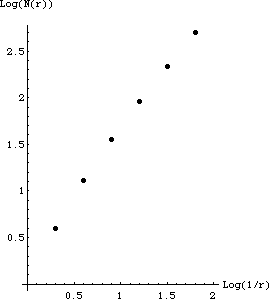

| 4(f) (i) To fill in the table, we must find the pattern of squares of side length
r = 1/2n needed to cover the shape. The horizontal line needs 2n boxes.
The x = 0 vertical line needs 2n - 1 boxes.
The x = 1/2 vertical line needs 2n - 1 boxes.
The x = 1/4 vertical line needs 2n - 1 boxes. ...
The x = 1/2n-1 vertical line needs 2n - 1 boxes.
All the other vertical lines are covered by an additional column of 2n - 1 boxes.
|
|
| On the left is the completed table, on the right is the graph. |
| r | N(r) | 1/r | Log(1/r) | Log(N(r)) |
| 1/2 | 4 | 2 |
0.301 | 0.602 |
| 1/4 | 13 | 4 |
0.602 | 1.114 |
| 1/8 | 36 | 8 |
0.903 | 1.556 |
| 1/16 | 91 | 16 |
1.204 | 1.959 |
| 1/32 | 218 | 32 |
1.505 | 2.338 |
| 1/64 | 505 | 64 |
1.806 | 2.703 |
|
 |
|
| The first two points do not appear to fall along athe same line as the remaining four.
The slope of this line approximates the box-counting dimension. We measure
dim = (2.703 - 2.338)/(1.806 - 1.505) = 1.033. |
| (ii) The pattern of the box counts is |
| 1/2n | N(2n) |
| 1/2 | 2 + 1 + 1 |
| 1/4 | 4 + 3 + 3 + 3 |
| 1/8 | 8 + 7 + 7 + 7 + 7 |
| 1/16 | 16 + 15 + 15 + 15 + 15 + 15 |
|
| In general, for boxes of side length 1/2n we have |
| N(1/2n) | = 2n + (n + 1)(2n - 1) |
| = 2n(n + 2) - (n + 1) |
| = 2n(n + 2 - (n+1)/2n) |
|
| Then the box-counting dimension is the limit |
| db | = limn → ∞Log(2n(n + 2 - (n+1)/2n))/Log(2n) |
| = limn → ∞Log(2n)/Log(2n) +
limn → ∞Log(n + 2 - (n+1)/2n)/Log(2n) |
| = 1 |
|
| (iii) The results of (i) and (ii) are close, but not identical because (i) was not calculated with boxes small enough to detect the
limiting value. |